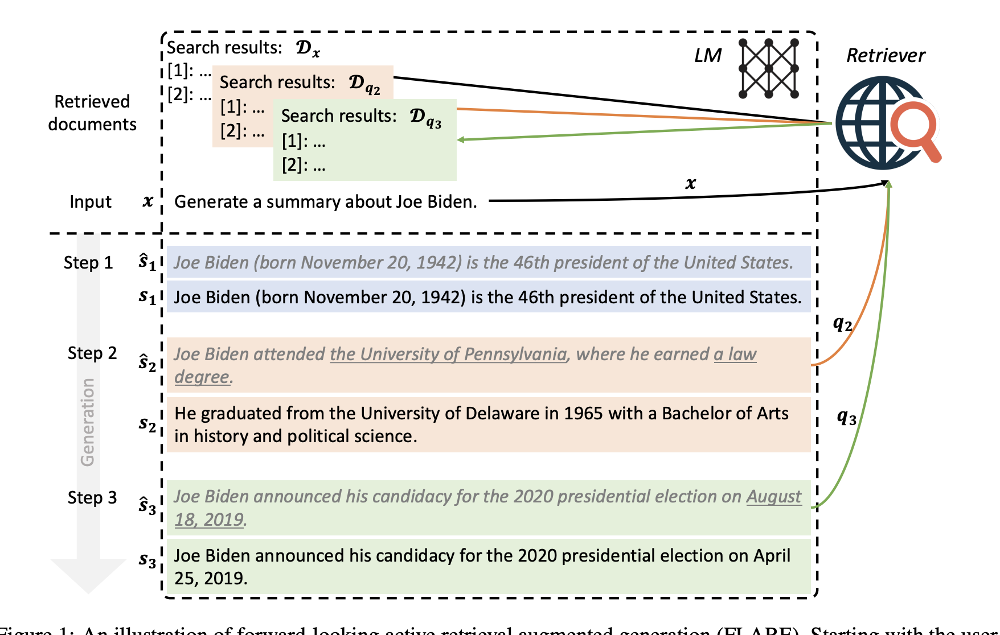
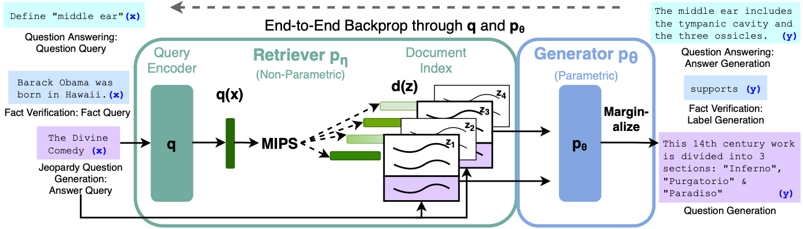
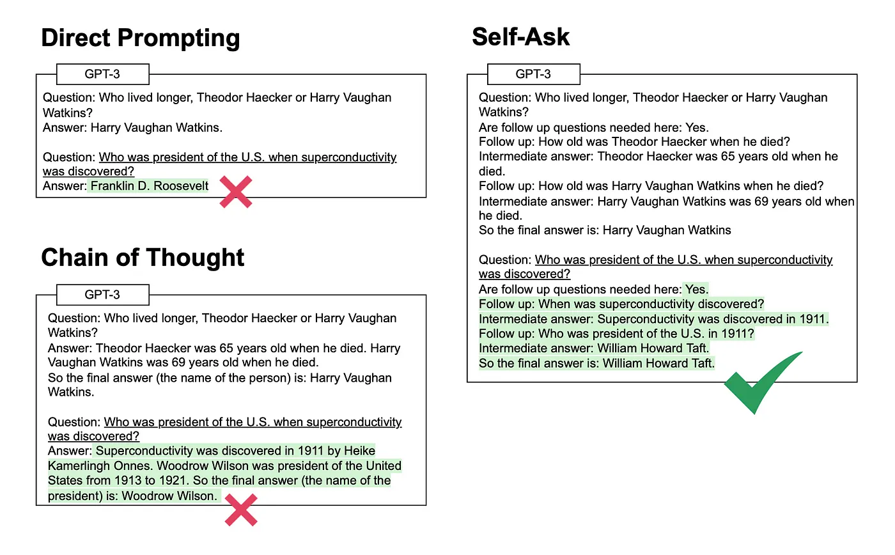
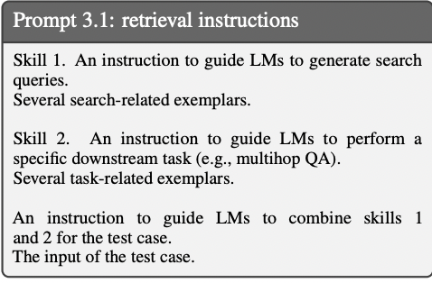
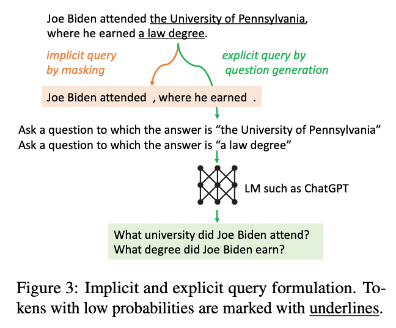
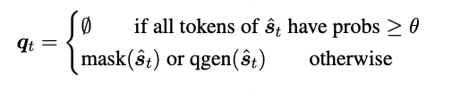
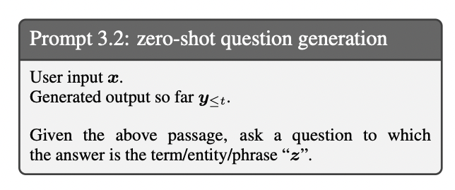
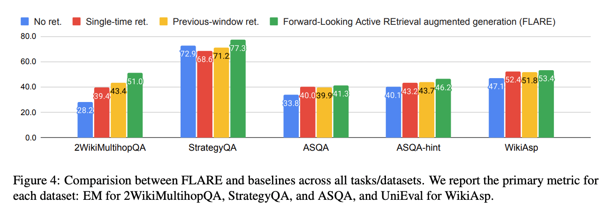

Active Retrieval Augmented Generation#
Overview#
RAG (Retrieval-Augment Generation) 구조, 일반 RAG 구조와 다르게 생성과정에서 언제, 무엇을 검색할지 정함
한계
모델의 능력(CoT, 판단 능력) 등이 좋아야하는 것으로 보임
또한 임계점 방식을 사용하는데 이를 위해서 데이터셋마다 추가 실험이 필요함
일반적인 QA short-answer에 대해서도 성능이 좋아졌는지에 관한 실험은 진행하지 않음.

Background#
기본 RAG(Retrieval-Augment Generation) 구조#

간단하게 말하자면 LLM에 사용자의 질문을 넣어서 답을 구할때 사용자의 질문만 넣는 것이 아니라 관련된 document를 검색해서 generate 하는 방식
자세한 과정
Query가 들어오면 Query 인코더를 통과해 임베딩을 뽑음
임베딩 내적값을 활용해 query와 가장 유사한 document를 검색
그 후 검색된 document (Top-k) + Query를 LLM generator(보통 Bart, T5) r에 input으로 넣음
LLM (generator) 가 답변을 generate
Benchmark#
Single-time Retrieval Augmented Generation#
흔한 RAG방식 한번만 검색해서 바로 응답
단점: 정보를 한번만 검색에 사용하기 때문에 Long-generation task에 부적합…
Previous window(Retro)#
질문 임베딩을 청크로 나누어서 검색해서 사용
Cross-attention을 청크와 검색문서사이에 진행, 추후에 합치는…
Previous Sentence (IR CoT)#
Retrieval과 Reasoning(CoT)를 같이 활용
마지막 CoT 문장을 query로 해서 검색에 활용하면서 최종 답안을 내는 형태
So the answer이 나올때까지 계속 같은 단계 수행
단점: 이전에 생성된 토큰을 기준으로 검색을 진행하기때문에 LLM이 향후 생성하고자 하는걸 반영 X
Question-Decomposition(Self-ASK)#

질문을 분해해서 Multi-hop 질문을 할 수 있도록…
단점: Problem (task)에 따라서 대응 / prompt engineering 을 진행해야함
예시 수학문제, 시멘트 파싱 등등
Method#
“생성될” 문장을 활용해서 지속적으로 정보를 재검색하면서 재 생성
즉 generation 하면서 정보가 필요하면 검색하고 아니면 자기의 내제된 지식으로 답변하는 느낌.
FLARE: Forward-Looking Active REtrieval Augmented Generation#
1. FLARE with Retrieval Instructions#
LLM이 생성하다가 추가 정보가 필요할때마다 [Search(query)] 생성
prompt 예시

2. Direct FLARE#
동기
앞에 방식 1번은 LLM의 능력을 그대로 믿는 방법 → 생성한 Query를 신뢰 할 수 없다는 단점이 존재
따라서 원래 LLM이 잘하는 다음문장을 가지고 결정하자!!!
과정
LLM은 time t 마다 다음 문장을 생성함 (검색 문서 없이, 원래 LLM처럼 다음문장 예측)
\hat{s_t} = LM(x,y_{<t})$
이 \(\hat{s_t}\) 을 가지고 검색을 trigger를 할지 정하고, 질문 queries를 생성함
LLM이 \(\hat{s_t}\) 에 대한 confidence를 가지고 있다면, 추가 검색을 하지 않고 계속 이어서 생성 그렇지 않다면, 검색을 진행, 검색된 문서를 같이 활용해서 \(\hat{s_t}\) 생성
마지막
토큰이 등장할때까지 이걸 반복
Confidence 계산 방법
well-calibrated 특징 사용
LLM이 지식이 부족할때는 낮은 확률을 뱉는 경향이 있음
따라서 생성한 모든 토큰이 임계값을 넘는지 체크
넘으면 LLM이 지식에 대한 확신이 있다(외부지식이 필요 없다) 하면 바로 사용
그렇지 않다면 검색 활용
검색 Query 생성 방법
이것도 임계값 기준으로 (\(\beta\)) 
Implicit query
토큰들 중 임계값보다 낮은 토큰을 마스킹하고 검색에 활용
계산 식

explicit query
토큰들 중 임계값보다 낮은 토큰과 llm을 활용해서 새롭게 query를 만들어서 검색에 활용
prompt 예시

Experiment#

모든 benchmark에서 성능이 개선됨.
MultiHopQA에서 가장 크게 개선
2-hop reasoning process를 목적으로 만들어진 벤치마크로 최종답변을 비슷하게 생성할수 있기 때문에
ASQA, WikiAsp는 비교적 적게 개선됨.
답변이 비교적으로 길기때문에 생성에 어려움